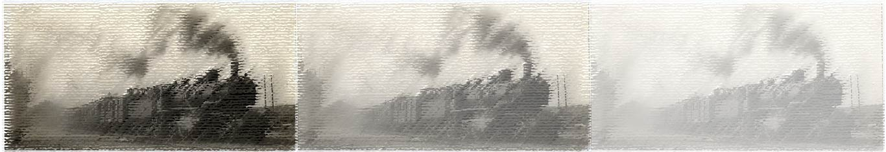

23 1/2 Train Dreams
A Meditation

by Nicole Roché
Now that I’m home all the time, here at 23 1/2 Walnut Street in Potsdam, New York, I have committed myself to documenting the trains that pass my house each day. This entails recording the time of day, direction (north- or south-bound), duration, notable contents, notable graffiti, and the occasional autobiographical note.
This might sound tedious, obnoxious, or crazy.
You’re either the kind of person who wants to keep a detailed record of a train schedule, or you’re not.
You’re either the kind of person who wants to read another’s person’s train schedule, or you’re not.

Methodology
Notes on the Train Schedule
Week 1 (March 28–April 3)—I didn’t know what I was looking for yet. Data is missing or incomplete. Most importantly, I wasn’t writing down engine numbers yet. Nonetheless this first week was important for helping me to define my data set and because it helped establish the existence of particular patterns, such as time or day or daily frequency.
Week 2 (April 4–10)—Much improved. Still not writing down engine numbers. We’ll get there.
Week 3 (April 11–17)—I am finally developing eyes for this project. A standardized data set emerges this week with the addition of engine numbers. This is the first time I notice the Tuesday/Thursday “baby train” schedule (#6531).
Week 4 (April 18–24)—We were supposed to return to school this week. That isn’t happening now.
Week 5 (April 25–May 1)—This week, the realization I never would have known about this baby train if I had still been teaching my regular Tue./Thurs. schedule.
Week 6 (May 2–8)—I’ve been metal detecting in the backyard. So many buried hunks of coal, rusted railroad spikes, random hunks of metal… Old railroad trash. I showed some students my train log in a Zoom meeting this week. They must think I've lost my mind.
Week 7 (May 9–15)—This weekend I was suddenly on-the-bathroom-floor sick with vomiting, diarrhea, and a fever. The fever lasted two days. Get Tested, my doctor said. Three nurses in gowns and face shields came to my window like Sonic car hops. “Turn your head and brace yourself against the head rest.” Three days later, results. I was in the clear.
Week 8 (May 16–22)—The semester is behind me. That means fewer Zoom meetings interrupted by trains (or vice versa?). A late spring this year, but now the foliage outside my bedroom window has exploded. I can no longer see the trains passing in the middle of the night. Which means I must run through the house and onto the back porch if I have any hope of catching those engine #s…
Week 9 (May 23–29)—We were out of town—overnight—for the first time in months. From Saturday afternoon until Monday morning. The whole time I thought about the trains I was missing. (Should I have asked a neighbor to help?)
Week 10 (May 30–June 5)—This week I accidentally wrote “Friday, June 6” in the train log (it was the 5th)—a mistake I did not correct until I started a new page in the log thirteen days later. Time continues to elude me.
Week 11 (June 6–12)—We finally set a date to follow the baby train. Wherever it goes when it goes south on Tue./Thur. mornings, it doesn’t go far—it’s always back within two hours. (Gouverneur? Philadelphia? Not as far as Watertown…) That morning, it came two hours early, while we were having our coffee in the kitchen. We never would have caught it.
Week 12 (June 13–19)—Lee always says if a train derailed here, we’d be fine given our house is on the inside curve. I'm not so sure. For one thing, I read that the explosion after the Lac-Mégantic derailment had a blast zone of 0.6 miles… My friend, a chemistry teacher, said that all those tanks full of hydrochloric acid, liquid petroleum gas, etc. aren’t the ones to worry about… it’s the crude oil.
Week 13 (June 20–26)—There has been talk of borrowing a trail cam so I never miss a train. I welcome, and fear, the data load.
Week 13 (June 27–July 3)—We spent the weekend in New Hampshire. Another black hole in the data… But a person must live. At a friend’s yard-fire across town that same week, I scrambled to record a passing train. (North? South? When do I start the timer?) Another friend remarked, “You aren’t still writing down trains, are you?”
Week 14 (July 4–10)—#6531, the baby train, has been replaced by #2503. Same schedule, but a little later. (Lee calls it a "lazy baby train.") We attended a Fourth of July party at our friends’ new house in Canton. Also near the tracks (though not on them). A train passes, and I walk down the street to watch it with my friend and his two-and-a-half-year-old boy. I take a video, pictures. The data is compromised. This isn’t my train. Or is it?
Week 15 (July 11–17)—On July 14, the New York Times publishes an article about documenting the pandemic in the moment. That "we are all field collectors.” One woman has been recording audio outside her Hollywood home—first eerie silence (and birds) under lockdown, and then the sounds of Black Lives Matter protestors and police on the move. “It’s another form of diary,” she said.
We might be moving. The market is hot and we can sell this place and rent this other better house that will be ready August 1. In the country. On the Orebed Road. But (?) / And (?) there are no trains on the Orebed Road. On July 13 I decided that whatever happens, I will continue this log for 23 ½ weeks (in honor of 23 ½ Walnut). That means keeping this up until the end of August. By that point, I might finally be ready to stop.
Sample
A Taste of the Raw Train Log
Friday, April 17
4:27 a.m.–NB—2 m
11:32 a.m.—SB—2 m 30 s—3420—Tags: “UPHIGH” / “PRIEST” / “ANVIL” / “HYPE” / “JESUS SAVES” / “Out of Black!” (in red)
Saturday, April 18
5 a.m.—NB—3 m—Stepped on Cap’s tail walking to the bathroom
Sunday, April 19
5:16 a.m.—NB—3 m 30 s—Can’t see engine # in the dark (I tried)
11:31 a.m.—SB—2 m—794 / 824—Irving (lumber), hydrochloric acid—Tags: “RIP Thing”—Lee: “It’s unusual… but legitimate, I think. To embrace this industrial thing as a meditation.”
Monday, April 20
8:09 a.m.—NB—1 m 30 s—3305—Tags: “PLASM” / “LEAF”—Bright sunny morn. Capt. sleeping on my head.
11:58 a.m.—SB—1 m 40 s—2 / 7202—Tags: “BIRD” / Kid smoking a joint
Tuesday, April 21
9:14 a.m.—SB—6531 + 4 coal cars (baby train)
11:09 a.m.—NB—6531 by itself (the babiest of baby trains)—Pic
1:05 p.m.—SB—1 m 45 s—3378 / 5379—Sea~Land / Canadian National—Tag: “SIP”